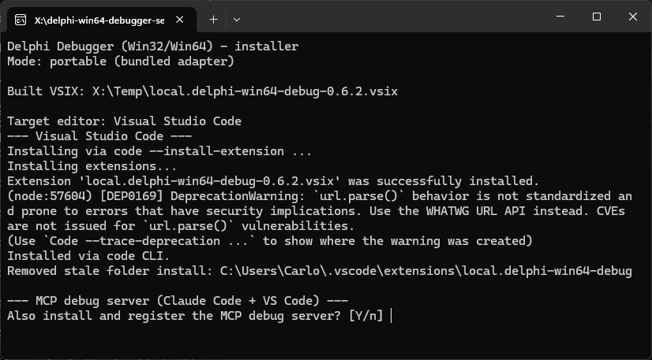
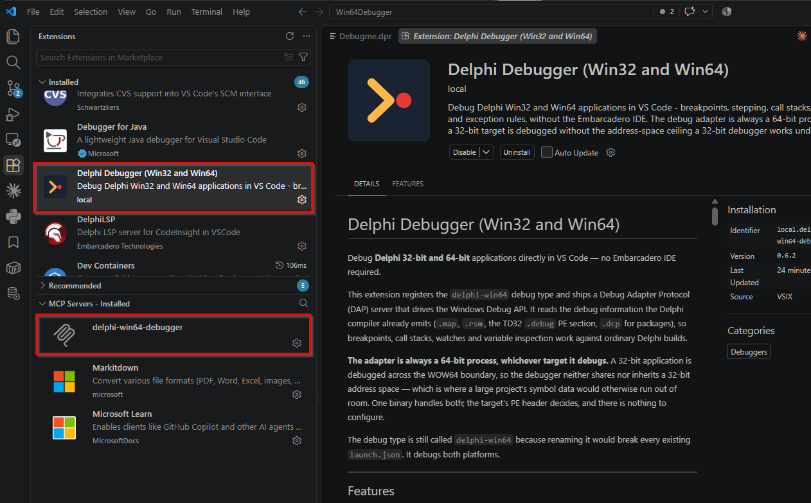
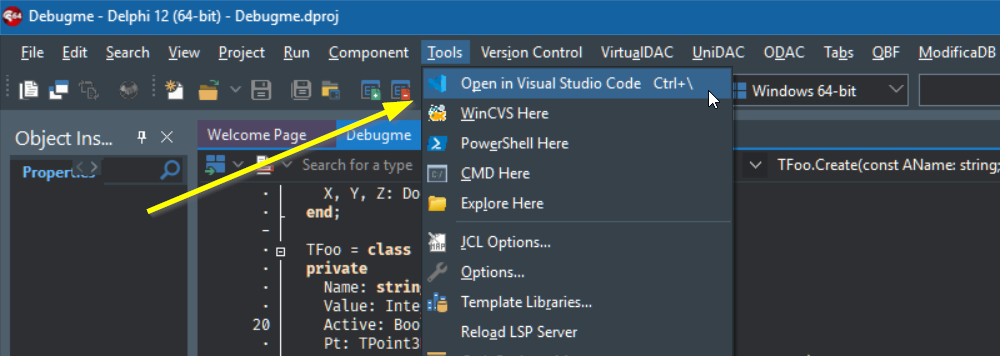

Getting started
If you only want to use the debugger, do not build anything. The VS Code extension on the Marketplace arrives with the debug adapter and the MCP server already compiled inside it, and the setup zip ships the same three pieces for the editors and machines the Marketplace does not reach. No Delphi toolchain is needed on the machine you install on — only on the machine that compiles the program you want to debug.
Important prerequisite
The debugger needs something that knows your project to describe it. It needs the executable (or the host application of a package), its symbol files, the source search paths and the project’s packages. Everything that makes your project your project — the output directory for this platform and configuration, the source root, the unit search paths accumulated over years, the BPL list on a package project — lives in the project options and has to be handed over. A real Delphi project can carry a couple of hundred search paths; that is not something anyone wants to write by hand.
Any one of these supplies it:
-
delphi-devkit (DDK),
2.7.0 or later — a VS Code extension that manages Delphi projects and compilers from
inside VS Code, without RAD Studio needing to be open. With DDK installed there is no
launch.jsonto write: right-click a project in DDK’s tree and choose Debug or Attach Debugger. See Opening a DDK project. - The Edit in VS Code Delphi IDE plugin, for working from RAD Studio. Its Tools → Edit in Visual Studio Code command generates the workspace and the launch configuration for the current project or project group. See Opening your project from Delphi.
-
A
launch.jsonyou write yourself, with nothing else to install. Fine for a small project — chapter 1 shows the minimum.
The project configuration is not only for debugging. Both DDK and the IDE plugin also give DelphiLSP the search paths it needs; without them, code navigation, completion and Copilot are all working half-blind on a codebase they cannot resolve.
Download
There are two routes, and they deliver the same extension.
-
The VS Code Marketplace — the ordinary route for Visual Studio Code. The
extension is listed as
Delphi Debugger,
id
mca-software.delphi-debugger. Nothing to download by hand, and VS Code keeps it updated. -
The setup zip — grab
delphi-win64-debugger-setup-*.zipfrom the latest release and extract it anywhere. The zip containsSetup.exeand the prebuilt binaries it installs. This is the route for Cursor, Windsurf, VSCodium and Trae, which the Microsoft Marketplace does not serve; for offline machines; for Claude Desktop; and for machines without VS Code at all.
Install
From the Marketplace
In VS Code, open the Extensions view (Ctrl+Shift+X), search for
Delphi Debugger, check that the publisher is
mca-software, and click Install. The extension bundles the
debug adapter and the MCP server; there is nothing else to install for debugging.
Agents hosted by VS Code see the bundled MCP server with no further setup. Since 0.7.3
Claude Code needs none either: at the first VS Code start after the install, if the
claude CLI is on PATH, the extension registers the server with
it and says so in one notification. On 0.7.2, run
Delphi: Register MCP Server with Claude Code once from the Command
Palette instead — see
Installing and registering the MCP server.
From the setup zip
Run Setup.exe. It detects the installed Visual Studio Code family editors and
installs the bundled .vsix into each one with that editor’s own
<editor cli> --install-extension, updating an existing installation in
place. At the end it offers to register the MCP server with Claude Code as well.
Since 0.7.3 it leaves an editor alone when that editor already has the extension from the Marketplace, and tells you to uninstall that copy first if you want the zip’s: one source per editor. It never downgrades a newer copy either. In both cases the MCP step is left to the copy that editor already has.

Setup.exe mid-run: it has installed the extension into Visual Studio Code
and is asking whether to register the MCP debug server as well.
Setup.exe. Code signing certificates cost more per year than
this project will ever make, which is nothing. The source of everything in the zip is
on GitHub
if you would rather build it yourself.
Say yes to the MCP registration offer if you want an AI coding agent to be able to drive the debugger — that is what MCP & AI agents is about. It can also be done later, and undone; see Installing and registering the MCP server.
Marketplace or setup zip
Both routes install the same extension, mca-software.delphi-debugger; it has
been on the Visual Studio Marketplace since version 0.7.1. What differs is how it is kept
up to date: VS Code updates a Marketplace install itself, while a setup-zip install is
told about new releases by the extension — see Staying up to date,
which also covers moving an existing setup-zip install over to Marketplace updates.
Use one source per editor: to switch, uninstall the extension in the Extensions view
first, then install it the other way.
local.delphi-win64-debug. That sideloaded copy must never stay installed
beside the current one: both contribute the same debug types. The extension notices it
on activation and offers to remove it — accept, then reload the window.
Setup.exe removes it on its own.
Uninstalling
Uninstall the extension from the Extensions view like any other. Since 0.7.3 its
uninstall hook also removes the MCP server’s Claude Code registration and
its stable copy in %LOCALAPPDATA%\DelphiWin64Debugger\ — but VS Code runs
that hook only when it deletes the extension from disk, at a restart after the uninstall
(after a command-line uninstall, the second start), and nothing is removed while another
VS Code-family editor still has the extension.
A setup-zip install can also be removed from every editor at once with
Setup.exe --uninstall (since 0.7.3). It removes its copy from each detected
editor, then — unless an editor still has the extension —
the Claude Code registration and the stable folder. A Marketplace copy, or an editor
whose CLI is not on PATH, is reported and kept. Either way, a Claude Code
registration pointing at another executable, such as a development build, is never
touched.
Installing from a source checkout
Only relevant if you are building the debugger yourself. Delphi 12 Athens or later is required to compile it.
| Method | When to use it |
|---|---|
install\Install.exe(built by scripts\build_installer.bat) |
The interactive installer, built from your own checkout. Same behaviour as the released Setup.exe: detects the editor installs, updates in place. |
scripts\install-dev.bat |
Development mode — points the extension straight at your build output, so a rebuild is picked up without reinstalling. |
scripts\build_vsix.bat |
Packages dist\mca-software.delphi-debugger-<version>.vsix with vsce — the same artefact the Marketplace and the setup zip carry. Install it with the editor’s --install-extension. Needs Node.js on PATH. |
First run
Restart Visual Studio Code after installing, then check three things.
- The extension shows up in the Extensions view as installed and enabled.
-
A debug configuration of type
delphiis offered — the label in the picker is Delphi (Win32/Win64). The original type name,delphi-win64, is kept as an alias with the same attributes, so an existinglaunch.json— hand-written or generated by the IDE plugin — needs no change. Both names debug both bitnesses. -
Gutter breakpoints can be set in your
.pasfiles. The debugger claims theobjectpascalandpascallanguage ids, and breakpoints also work in files VS Code has typed asdelphi.

local.delphi-win64-debug, and under
MCP Servers the mcp.json entry that older installers
wrote. A current install shows Delphi Debugger from publisher
mca-software, identifier mca-software.delphi-debugger, and
VS Code gets the MCP server, delphi-debugger, from the extension itself.
That is the debugger installed. Next comes getting your actual project in front of it, which is the other half.
Opening a DDK project
With
delphi-devkit
2.7.0 or later installed, there is no launch.json to write. Right-click a
project in DDK’s tree and choose Debug or
Attach Debugger, or pick the project from the debug dropdown in
Run and Debug.
If you would rather keep a configuration of your own, it names the project and nothing else:
{ "type": "delphi", "request": "launch", "name": "Debug MyApp", "ddkProject": "MyApp" }
ddkProject is a DDK project name, id, or the path of a .dproj /
.dpr / .dpk. When the session starts, DDK is asked for the
project’s debug target and the configuration is completed from it:
program (for a package or DLL project, its Host Application),
mapFile / rsmFile, sourceRoot,
sourceSearchPaths, modules (the project’s own
.bpl / .dll with their symbols), args and
delphiProjectFile. Anything you write yourself stays as written.
"request": "attach" attaches to the running executable, through the process
picker when several instances run. DDK’s own warnings — a stale .rsm, a
package not built — are shown as notifications. DDK’s Debug /
Attach Debugger context-menu entries and its entries in the debug
dropdown start exactly this configuration.
Opening your project from Delphi: the Edit in VS Code plugin
A Delphi project carries its configuration in the IDE: output directories per platform
and per configuration, unit search paths accumulated over years, and for a package
project the list of BPLs. VS Code on its own knows none of it, and transcribing it into
launch.json by hand is not an afternoon anyone should spend.
The Edit in VS Code plugin reads it out of the project options you already have and writes the workspace for you — including both the launch and attach configurations this debugger uses. It is a separate project of the same author, and the route to take when you work from RAD Studio.
Installing it
It is a design-time package: it installs into the Delphi IDE, the way components do — there is no setup program. If you have never installed a package before, the whole procedure is this:
-
Clone the repository into a folder of its own, and keep it — the IDE loads the package
from where you built it, so this is not a temp directory:
No git? The repository’s Code → Download ZIP button gets you the same files.git clone https://github.com/csm101/EditInVsCodeDelphiPlugin.git -
In Delphi, open
EditInVSCode.dpkfrom that folder (File → Open Project). - In the Project Manager pane, right-click the package → Install. Delphi compiles it and loads it into the IDE; a confirmation names the plugin it just registered. From now on it loads with the IDE — this is a one-time step.
- Turn on Tools → Options → Editor → Language → Delphi → Code Insight. DelphiLSP in VS Code needs it; without it you get the debugger but no code intelligence.
- Pick your hotkey under Tools → Options → Third Party → Edit in VS Code — the key that will flip you from Delphi to VS Code on the file you are editing.
-
Verify: open any
.pasin Delphi and run Tools → Edit in Visual Studio Code. VS Code must open on that same file. If it does, everything below is already working.
git pull in that folder,
reopen the package, right-click → Install again.
Using it
With the project you want to work on open in Delphi:
Tools → Edit in Visual Studio CodeThat single command does the whole round trip:
- saves everything you have modified in the IDE;
-
generates the workspace file,
launch.jsonandtasks.jsonfrom the active project or project group; - opens VS Code on the file you were editing, at the same line and column — not just on the folder;
- reuses an editor window already open on that workspace instead of stacking another.
From there, F5 starts a debug session against the configuration it just
wrote. That is the point at which
the tutorial becomes useful.
The menu entry also carries a keyboard shortcut, configurable per editor. Its settings live under Tools → Options → Third Party → Edit in VS Code, and it can drive Cursor, Windsurf, TRAE and VSCodium as well as VS Code itself — the menu entry changes name to match.
What to put under version control
| File | |
|---|---|
vscode-workspace-defaults.json |
Yes. It holds what the team shares — editor settings and recommended extensions. The plugin creates it with sensible defaults and never rewrites it, so edit it freely. See chapter 0 for what belongs in it and why. |
The generated .code-workspace |
No. It contains machine-specific paths and a per-developer debug configuration. It is regenerated on demand, so there is nothing to lose. |
Paths inside the generated configuration are written relative to the workspace wherever possible, so a configuration produced on your machine still works on a colleague’s, wherever they checked the project out.

Companion tooling
| Tool | Why |
|---|---|
delphi-devkitSnowcaloid.delphi-devkit, 2.7.0 or later |
One of the three ways to describe your project to the debugger — the one that needs neither RAD Studio nor a launch.json. Covered above. |
| Edit in VS Code (Delphi IDE plugin) |
One of the three ways to describe your project to the debugger — the one for working from RAD Studio, covered in full above. Without it or DDK you write launch.json by hand; chapter 1 shows the minimum, but on a real project you will not enjoy it. |
DelphiLSPembarcaderotechnologies.delphilsp |
Delphi language support in VS Code — syntax, autocomplete. A separate Embarcadero extension; this one only debugs. |
Hex Editorms-vscode.hexeditor |
No longer needed. The extension ships its own memory view; the stock pane is only relevant if you turn delphi-win64.stockMemoryView back on. See Registers, memory and disassembly. |
| Delphi 12 Athens or later | Needed to build the debugger from source, and the supported minimum for the program you want to debug. |
Staying up to date
A Marketplace install is updated by VS Code itself, like any other extension, and since 0.7.3 it never asks GitHub. (On 0.7.2 a Marketplace install also showed the GitHub notice described below; ignore it there, VS Code updates that copy itself.)
A setup-zip install is not. VS Code records an extension installed from a
.vsix as pinned, so it is never auto-updated from the Marketplace. Instead
the extension itself checks GitHub releases once a day. When a newer version exists you
get a notification — Delphi Debugger <version> is available — offering two
things: Download, which opens the release page, and
Skip this version, which silences that particular version for good —
useful when you have decided to stay where you are. It fails silently when the machine is
offline or behind a proxy: no error, no repeated prompting.
Since 0.7.3 an update also refreshes the MCP server’s stable copy at the next VS Code start. The Claude Code registration keeps working, since its path does not change, but a Claude Code session that is already running keeps the old server until it is restarted.
Turn it off entirely with delphi-win64.checkForUpdates — the full settings
list is in the
settings and commands reference.
Updating a setup-zip install is the same operation as installing: run the new
Setup.exe, it replaces the previous version in place.
To move a setup-zip install in VS Code over to Marketplace updates, uninstall the extension, then install it from the Marketplace. From then on VS Code keeps it current.